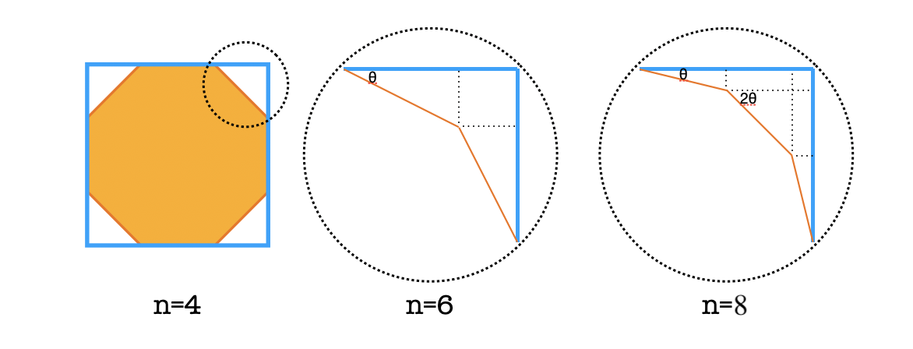
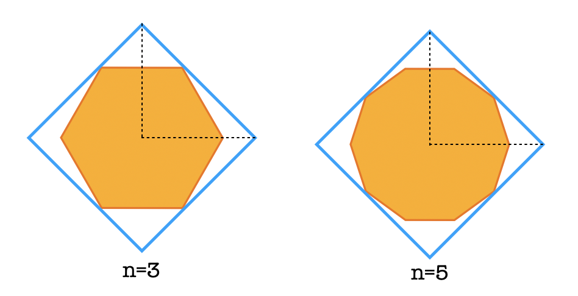

Educational Codeforces Round 87
rating 大涨174！开心～～～
A. Alarm Clock
Solution
如果 $a\leq b$，那么时间就是 $b$；否则，如果定的时间内睡不着，无解；否则，答案就是 $b+\left\lceil\frac{a-b}{c-d}\right\rceil\times c$.
Code
1 |
|
B. Ternary String
Solution
设 $d[i][1/2/3]$ 表示第 $i$ 个数之前（包括本身）的第一个 $0/1/2$ 的位置。这个可以很容易 dp 得到。
于是对于以 $i$ 为右端点的区间，$\min{d[i][1],d[i][2],d[i][3]}$ 就是最大的包含 $0,1,2$ 至少一次的左端点，用区间长度更新答案。
Code
1 |
|
C1. Simple Polygon Embedding
Solution
$n$ 为偶数，最小的能框住正 $2n$ 边形的正方形长这样（$n=4$ 画了完整的图，$n=6,8$ 只画了圆圈内的部分）：

按这个规律码就行了。
P.S. 我果然做复杂了……答案就是 $\frac{1}{\tan{\frac{\pi}{2\cdot n}}}$.
Code
1 |
|
C2. Not So Simple Polygon Embedding
Solution
$n$ 为奇数，最小的能框住正 $2n$ 边形的正方形长这样（$n=4$ 画了完整的图，$n=6,8$ 只画了圆圈内的部分）：

找到正方形的边与哪个顶点触碰（该顶点是第一个倾角大于等于 45 度的顶点），就可以计算了。
P.S. 是的我又做复杂了，答案就是 $\frac{\cos(\frac{\pi}{4n})}{\sin(\frac{\pi}{2n})}$.
Code
1 |
|
D. Multiset
Solution
用值域线段树模拟题目操作。
好吧，其实用树状数组就可以了。
Code
1 |
|
E. Graph Coloring
Solution
首先发现性质：如果图中存在奇环，那么一定不可行。
于是现在图中没有奇环，也即该图是若干个连通的二分图。我们只需要在每一个二分图中选择一侧填 $2$，另一侧填 $1$ 或 $3$，问是否存在一个方案使得 $2$ 的数量等于 $n2$（$1$ 和 $3$ 的数量自然就是 $n1+n3$ 了）。
这是一个简单的 dp：记 $a[i],b[i]$ 表示第 $i$ 个二分图的两侧的点数，设 $dp[i][j]$ 表示前 $i$ 个二分图能否选出 $j$ 个点填 $2$，那么，$dp[i][j]=dp[i-1][j-a[i]]\ \mathrm{OR}\ dp[i-1][j-b[i]]$.
这玩意儿其实可以用 bitset 优化，但是这道题犯不着。
至于输出方案，我们在 dp 的过程中记录一下转移的路径，就可以从末状态倒着推回去了。
Code
1 |
|
F. Summoning Minions
Solution
【参考官方题解】首先我们找到一些贪心的性质：所有兵都应该被召唤（如果某兵没有被召唤，召唤它之后再删掉它不会使答案更差）；最终应该召唤满 $k$ 个兵（如果不满 $k$ 个，我们没有必要删掉某些兵）；如果一个兵会被删去，我们可以再召唤它之后立刻删掉它，对答案无影响。
基于上述性质，我们的策略是：先召唤 $k-1$ 个兵；再召唤 $n-k$ 个兵，并且一召唤出来就立刻删掉它；最后召唤 $1$ 个兵。
先召唤的 $k-1$ 个兵中，第 $j$ 个召唤的兵对答案的贡献是 $a_i+(j-1)\cdot b_i$；随后召唤的 $n-k$ 个兵对答案的贡献都是 $(k-1)\cdot b_i$；最后一个兵对答案的贡献是 $a_i+(k-1)\cdot b_i$.
于是我们可以把 $n$ 个兵到 $n$ 个位置（一共 $n^2$ 个数对）对答案的贡献算出来。我们现在需要找到一个配对方式，使得每一个位置被分配一个兵。于是可以网络流解决：以兵和位置为顶点建图，某兵到某位置的边的流量为 $1$，费用为该兵到该位置的对答案的贡献；然后源点向每个兵连流量为 $1$，费用为 $0$ 的边；每个位置向汇点连流量为 $1$，费用为 $0$ 的边。跑最小费用最大流（因为题目要求价值最大，所以上述连边中费用全部取负，跑出来的最小费用取负就是最大价值）。输出方案的话，哪条边满流了就说明那条边是一个匹配。
Code
1 |
|
Educational Codeforces Round 87
http://xyfjason.github.io/blog-xcpc/2020/05/17/Educational-Codeforces-Round-87/